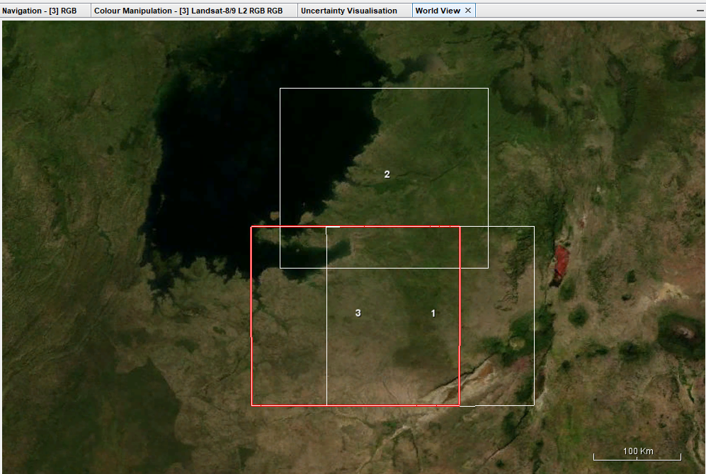
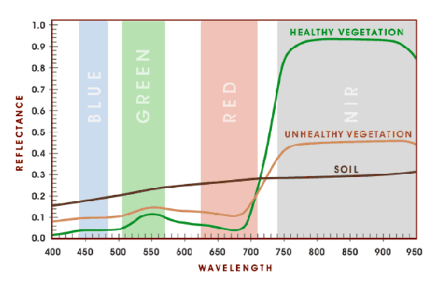
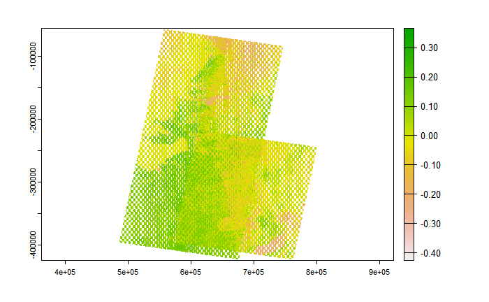
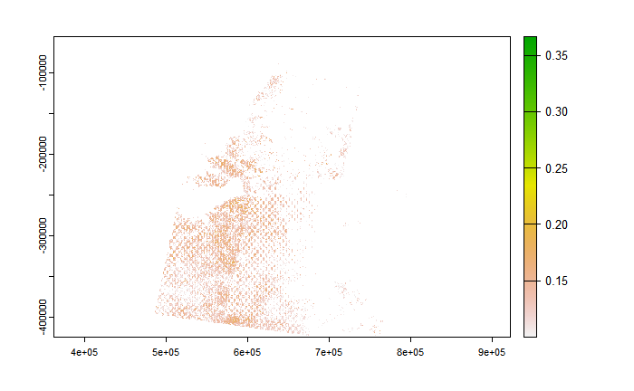
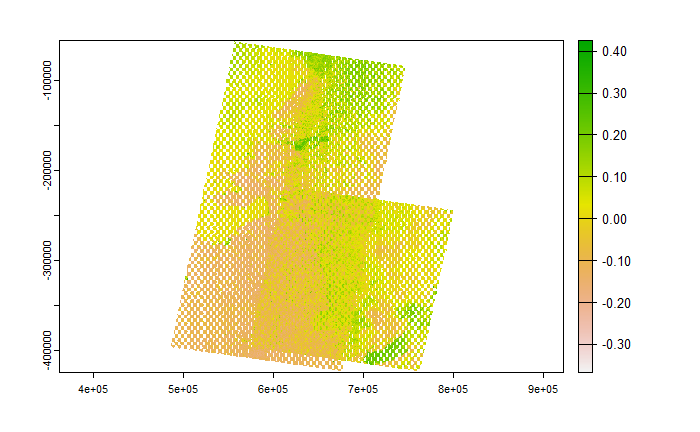
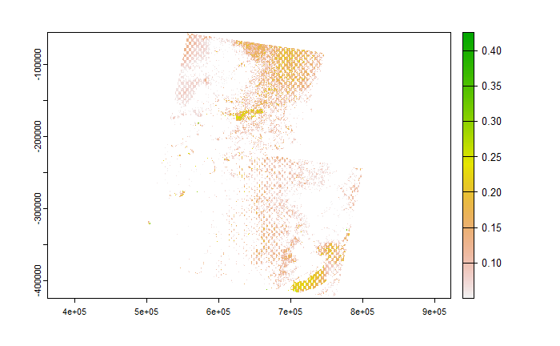

3 Week 3: Corrections
3.1 Learning Objectives
Understand and apply types of corrections that can be applied to remotely sensed data
Understand and apply methods of data joining and enhancement
Understand how enhancements can be used to emphasize certain features or spectral traits
3.2 Summary of Key Concepts
3.2.1 Overview
In this lecture, we mainly looked at types of corrections that could be applied to remotely sensed data:
- Geometric
Use Ground Control Points (GCPs) to match points in the new image to a reference dataset.
Ideally done with backward mapping (output to input) so that we can get a value in the original input image for every value in the gold standard (Jensen 2015:247).
And resample the final raster
- Atmospheric
Relative (e.g. Dark Object Subtraction or Pseudo-Invariant Features)
Absolute; using atmospheric radiative transfer models, assuming atmospheric measurements are available (e.g. Py6S)
- Orthorectification/ Topographic Correction
Removing distortions such that the pixels viewed at nadir (straight down)
Requires sensor geometry and DEM.
Cosine correction can be used (Jensen 2015)
- Radiometric
- Using Digital Number to obtain spectral radiance
We also looked at how remotely sensed data can be mosaicked and enhanced. Mosaicking is the process of joining 2 or more images together, similar to merging in the sense of polygons.
Types of Enhancements and methods:
Contrast enhancement:
Minimum-Maximum
Percentage Linear and Standard Deviation
Piecewise Linear Contrast Stretch
Band Ratioing
Filtering
Principal Component Analysis (PCA)
3.2.2 Geometric Corrections and Mosaicking (Jensen 2015)
For this week’s learning diary, I will be focusing on types of geometric corrections and the mosaicking process, based on Jensen’s textbook (2015).
Ground Control Points are locations on the road surface that can be easily and accurately identified on a map. Each GCP should have 2 distinct sets of coordinates, image and map coordinates.
Image-to-map rectification
This is the process by which the geometry of an image is made planimetric, to remove distortion caused by topographic relief displacement.
Steps:
- Spatial Interpolation: The geometric relationship between input pixel coordinates and reference map coordinates must be identified, to establish the nature of transformation to be applied to all other pixels.
Unsystematic errors in the new image produced by changes in attitude (roll, pitch and yaw) or altitude
A first-order, six-parameter, linear transformation is sufficient to rectify the imagery to a geographic frame of reference.
This type of transformation can model 6 kinds of distortions (Novak 1992; Buiten and Van Putten 1997):
Translation in x and y
Scale changes in x and y
Skew
Rotation
Forward Mapping (input-to-output):
\[ x = a_0 + a_1 x' + a_2 y' \]
\[ y = b_0 + b_1 x' + b_2 y' \]
This forward mapping logic is useful when we rectify the location of discrete coordinates along a linear feature. However, when we are filling a rectified output grid with values from an unrectified input image, forward mapping logic is not very useful as the output location may not fall exactly on a x,y output map coordinate.
This can result in output matrix pixels with no output values (Wolberg 1990)
Inverse Mapping (output-to-input)
\[ x' = a_0 + a_1 x + a_2 y \]
\[ y' = b_0 + b_1 x + b_2 y \]
The rectified output matrix is filled systematically, with the equation using the six coefficient to determine where to get a value from the original input image. Here, nearest-neighbour resampling logic is used.
A quadratic polynomial can also be used for transformations, but this is usually only used when there are serious geometric errors, usually in imagery obtained from suborbital aerial platforms.
\[ x' = c_0 + c_1x + c_2y + c_3xy + c_4x^2 + c_5y^2 \]
\[ y' = d_0 + d_1x + d_2y + d_3xy + d_4x^2 + d_5y^2 \]
Computing the Root-Means-Squared-Error of the Inverse Mapping Function
Using RMSE allows us to determine how well the 6 coefficients derived from the least-squares regression of the initial GCPs account for the geometric distortion in the input image.
The user specifies a threshold of acceptable total RSME, and the GCP with the most individual error will be deleted, then recompute the 6 coefficients and RMSE for all points, until the RMSE is less than the threshold or there are too few GCPs remaining for a regression.
- Intensity Interpolation: Pixel brightness values should be determined. When a pixel in the rectified output image requires a value from the input pixel that does not fall neatly on a row-and-column coordinate, there must be a mechanism for determining the Brightness Value (BV) to be assigned to the output rectified pixel.
Several methods of Brightness Value interpolation including nearest neighbour, bilinear interpolation and cubic convolution
Nearest neighbour is computationally efficient and does not alter BVs during resampling. It should be used when biophysical information is to be extracted from the dataset.
Bilinear interpolation assigns pixel values by interpolating BVs in 2 orthogonal directions, computing a new BV based on weighted distances to the nearest 4 pixel values. This method acts as a spatial moving filter that subdues extremes in BVs in the output image.
Cubic convolution assigns values similarly to bilinear interpolation, except that weighted values of 16 input pixels are used.
Image-to-image registration
This is the translation and rotation alignment process by which 2 images of similar geometry and of same geographic area are positioned coincident to each other so that corresponding elements appear in the same place. This is used when it is not necessary to have each pixel assigned a unique x,y coordinate. A hybrid approach that uses both image-to-map rectification and image-to-image registration might be useful when detecting change between 2 or more dates of remotely sensed data.
3.3 Summary of Practical
This practical covered basic correction concepts such as atmospheric correction, mosaicking and enhancements. For this practical, I decided to look at Landsat8 imagery of Serengeti National Park (SNP) in Tanzania. I will be summarising my takeaways from the mosaicking and ratio enhancement sections of the practical, as I found them to be particularly useful. I was also unable to perform the PCA section as it took too long for my computer.
3.3.1 Mosaicking
For SNP, 3 tiles were needed to have a fuller view of the whole national park, so I downloaded 3 tiles that covered most of it. The first image shows the extent covered by the downloaded tiles, while the second shows the mosaicked output from R.

The mosaicked output in R was written to a GeoTiff file and then viewed in QGIS. It appears slightly off but I am unsure what went wrong in the process or this is an expected outcome.
3.3.2 Ratio enhancements: NDVI
The Normalised Difference Vegetation Index is an application of ratioing, based on the fact that green vegetation absorbs the Red wavelength but reflects more in the NIR wavelength. This is illustrated as:

Source: PhysicsOpenLab
\[ NDVI = \frac{NIR - Red}{NIR + Red} \]
Applying the NDVI formula to my dataset, I obtained first

We can also focus on areas where NDVI is equal or greater than 0.1:

We observe that the vegetation is not as healthy as we might expect, and this is because the images used were between 24/10/22 and 31/12/22 which coincides with the drier period.
This also coincides with the visualisations obtained when using the Normalised Difference Moisture Index (NDMI) and focusing on areas where NDMI is equal or greater than 0.1:


Data fusion is the process of appending new raster data to existing datasets or creating new raster datasets with different bands, and data fusion can be done with newly-created texture measures and the original data. Fusion can be done in R using the stack() function.
When merging datasets obtained from different remote sensors, all datasets should be accurately registered to one another and resampled to the same pixel size. One component-substitution method available is Principle Component Analysis (PCA). At this stage I would have done Principal Component Analysis to scale the raster datasets, but unfortunately I was unable to complete the PCA part of the practical. PCA allows comparison of data that is not easily comparable in its raw form. Performing PCA would transform the original data to produce uncorrelated principal component images (Pratt 2013). An advantage of PCA-based pan-sharpening is that the number of bands is not restricted (Klonus and Ehlers 2009)
3.4 Applications of Ratio Enhancements
The normalised difference vegetation index (NDVI) is widely used for vegetation studies, with the NASA Global Inventory, Monitoring and Modelling Studies (GIMMS) global coverage dataset (Tucker et al 2005) being the most widely used AVHRR (Advanced Very High Resolution Radiometer) dataset. They form a relatively robust basis for detecting long-term trends in NDVI in most of the world’s semi-arid, dry sub-humid and sub-humid areas (Fensholt and Proud 2012).
NDVI values can be used to determine and analyse drought-prone areas, such as Faridatul and Ahmed’s (2020) work incorporating NDVI values into a modified vegetation condition index (mVCI) which enhances the detection of agricultural drought in the study area of Bangladesh; or can be used to analyse crop yields based on Pinto et al.’s (2017) work on canola yields in Brazil.
Focusing on Serengeti National Park, I thought it would be useful to use NDVI on satellite imagery of SNP for potential applications of monitoring anthropogenic impacts on the Protected Area or impacts of climate change on the ecosystem. For example, Boone et al (2006) use rainfall and vegetation data (and NDVI) to model Serengeti wildebeest migratory patterns. However, Anderson et al (2010) also make the point that we should be cautious when using NDVI to study wildlife hotspots as NDVI can represent the effects of multiple, correlated processes (e.g. biomass, forage quality, cover for predators etc.) that influence the presence of hotspots (e.g. herbivore hotspots).
3.5 Reflections
As Andy mentioned in the lectures, it is unlikely that we would have to perform geometric corrections given that most datasets are “Analysis Ready Data” (ARD), but it is useful to know in the event that we encounter data that requires geometric correction, or even just understanding how the data products we use have been treated from their raw form.
Mosaicking is a useful process given the limitations of some remote sensing products regarding geographical extents, and might come in handy in future research. Nonetheless, Andy also mentioned how this process may not be as important today as it is incorporated in the Google Earth Engine (GEE) workflow, so I am excited to learn in future weeks how this process is done in GEE. Mosaicking is also a bit of a throwback personally, back to 2017-18 for me when I learnt how to orthorectify and mosaic in ERDAS Imagine software (which I realised I have forgotten most of by now) and I am excited to learn how the process has evolved today when we start using GEE.
3.6 References
Buiten, H. J. and B. Van Putten (1997) ‘Quality Assessment of Remote Sensing Registration- Analysis and Testing of Control Point Residuals’, ISPRS Journal of Photogrammetry & Remote Sensing, 52, 57-73. Available at: https://doi.org/10.1016/S0924-2716(97)83001-8
Jensen, J.R. (2015) Introductory Digital Image Processing, 4th edn, Pearson Higher Education US (A Remote Sensing Perspective).
Novak, K. (1992) ‘Rectification of Digital Imagery’, Photogrammeric Engineering & Remote Sensing, 58(3), 339-44.
Pratt, W. K. (2013) Introduction to Digital Image Processing, Boca Raton: CRC Press, p. 736.
Tucker, C. J., J. E. Pinzon, M. E. Brown, D. A. Slayback, E. W. Pak, R. Mahoney (2005) ‘An extended AVHRR 8-km NDVI dataset compatible with MODIS and SPOT vegetation NDVI data’, International Journal of Remote Sensing, 26, 4485-98.
Wolberg, G. (1990) Digital Image Warping, NY: John Wiley- IEEE Computer Society, p. 340.